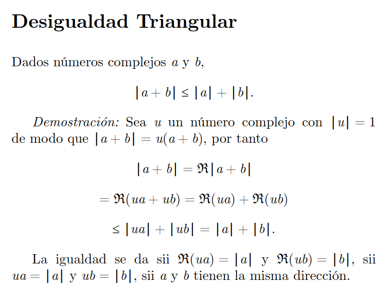

Desigualdad Triangular

La desigualdad triangular indica que la suma de las longitudes de dos lados de un tríangulo es mayor o igual que el lado tercero. Esta desigualdad es de amplia aplicabilidad en espacios métricos.

La desigualdad triangular indica que la suma de las longitudes de dos lados de un tríangulo es mayor o igual que el lado tercero. Esta desigualdad es de amplia aplicabilidad en espacios métricos.